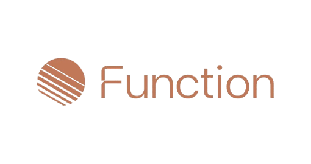

Function Health
Senior Medical AI Engineer, ведущий медицинский AI R&D в направлениях архитектуры, защитных механизмов и дизайна оценки. Фокус на безопасных AI-системах и надежных практиках внедрения в превентивной медицине.

AlphaROC
Разработал метод сезонного анализа финансовых транзакций; создал ML-модели прогнозирования цен и оценки фьючерсов и акций; автоматизировал сбор и анализ альтернативных данных и финансовой отчетности.

Open Dialogue Space
Директор по науке. Руководит научно-исследовательскими работами цифровой платформы для психического здоровья; внедрил интерактивные дашборды для мониторинга состояния психического здоровья и семантические конвейеры для выявления кризисных состояний.

Dreamseer
Сооснователь. Применил передовые методы NLP и ИИ для создания инновационной платформы анализа сновидений, расширив возможности цифровых решений в области психического здоровья.

Safehaven Hedge Fund
Занимался ончейн-аналитикой и макроэкономическим анализом рынков; разрабатывал алгоритмические стратегии торговли и хеджирования; поддерживал коммуникацию с клиентами.

OhCleo
Разрабатывал продвинутые чат-боты на базе больших языковых моделей, систему тематического тегирования контента и конвейеры преобразования речи в текст для повышения вовлеченности пользователей и персонализации платформы.

Katharsis Journeys Ltd
Сооснователь. Организовал стратегические партнерства с академическими учреждениями; внедрил NLP-решения, обеспечившие рост выручки на 40%. Проект Katharsis Journeys признан одним из лучших псилоцибиновых ретритов в Европе (Healing Maps).

Karolinska Institutet
Аналитика больших данных для информирования политики в сфере потребления психоактивных веществ и анализа глобальных социально-экономических трендов. Координировал масштабные инициативы по улучшению психического здоровья и клинические исследования новых методов терапии депрессии.

Stavanger University Hospital
Разработал ML-инструменты для анализа клинических данных; привлек финансирование в размере 1,5 млн NOK; наладил международное научное сотрудничество.

Aging Research Center
Координировал проект Европейского исследовательского совета (ERC) с бюджетом €1 млн по изучению когнитивной и нейробиологической пластичности. Курировал полный цикл клинического исследования — от разработки протокола до анализа данных и подготовки итогового отчета.